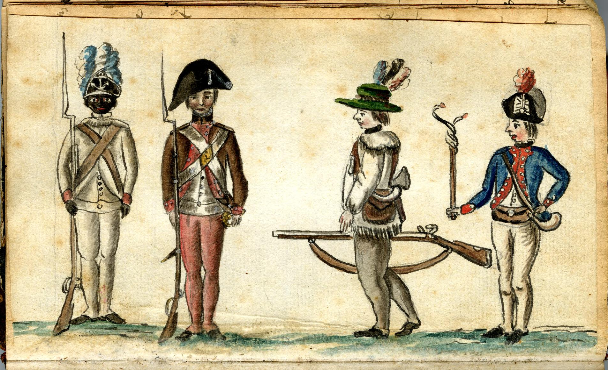
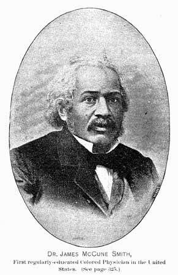

Aula 3
Aula 3CCLHM0081 · História da América Independente
Formação da República dos EUA
Aula 3Acesse os slides da Aula 3
Abra a apresentação no celular e acompanhe no seu ritmo.
Aula 3Retomada · Aula 2
Declaração de Independência (1776)
- Escrita principalmente por Thomas Jefferson, com contribuições de outros membros do Congresso.
- Fortemente influenciada pelos ideais iluministas: direitos naturais e soberania popular.
- Embora proclamasse que "todos os homens são criados iguais", a questão da escravidão foi controversa e comprometida.
- Marco decisivo na formação de uma nova nação baseada em princípios democráticos.
Aula 3 Aula 3
Aula 3Ideia radical
Um Asilo para a Liberdade
É radical? Em qual contexto?
- Ruptura completa com as tradições monárquicas e aristocráticas da Europa.
- Criação de uma nação baseada em princípios de liberdade individual e igualdade — vista como afronta aos sistemas estabelecidos.
- A independência justificada não apenas como separação política, mas como fundação de uma sociedade nova, livre das opressões do Velho Mundo.
Aula 3Herança liberal
Um Asilo para a Liberdade
Pensamento liberal local e popular
- A Revolução Americana bebeu da tradição liberal desenvolvida nas colônias: práticas de autogoverno local e valorização da liberdade individual.
- Desconfiança inerente em relação às autoridades centrais: o poder deve ser descentralizado e as comunidades locais devem ter máxima autonomia.
- O conflito entre o local e o central foi uma característica duradoura do pensamento político americano.
Aula 3A Guerra pela Independência
Exércitos em confronto
Exército ContinentalFormado pelo Segundo Congresso Continental em 1775, sob George Washington. Milícias coloniais; oficiais de classes populares.
Exército BritânicoUm dos mais poderosos do mundo. Soldados profissionais e mercenários alemães (hessianos). Vantagem de treinamento e logística, mas desafiado pela distância e geografia.
Aula 3
Aula 3Análise em sala
Questões para análise
- Quem são os quatro soldados representados e o que suas vestimentas indicam sobre suas origens e funções no conflito?
- Por que um oficial francês retratou essa diversidade de soldados em seu diário? O que isso revela sobre o caráter da Guerra de Independência?
- Qual é o significado histórico da presença de um soldado negro do Primeiro Regimento de Rhode Island nesta imagem?
Aula 3Ficha técnica
Informações da fonte
- Título: Soldiers in Uniform
- Artista: Jean Baptiste Antoine de Verger, 1762–1851
- Data: Williamsburg, Virginia, [1781 a 1784]
- Coleção: Anne S.K. Brown Military Collection
- Fonte digital: Biblioteca do Congresso — Digital ID
Aula 3A Guerra pela Independência
Desenvolvimento e consequências
- Duração e desdobramentos: a guerra durou quase oito anos (1775–1783), passando por diferentes fases. Começou como um conflito regional em Massachusetts e se transformou em uma guerra global, envolvendo potências europeias como a França.
- Consequências: para os colonos americanos, a guerra resultou na independência e na formação de uma nova nação. Para a Grã-Bretanha, significou a perda de suas colônias mais valiosas e uma reavaliação de suas políticas imperiais.
Aula 3Estratégia britânica · 1/2
Estratégia britânica
Objetivo central
- Isolar as colônias rebeldes, especialmente a Nova Inglaterra.
- Depois mudou para contenção e pacificação.
- Dominar grandes cidades como Nova York.
- Derrotar o exército de Washington em batalhas decisivas.
Aula 3Estratégia britânica · 2/2
Estratégia britânica
Desafios
- Dificuldades logísticas.
- Subestimação da resistência americana.
- Vastidão do território americano.
- Apoio popular à causa rebelde.
Aula 3O papel da França · 1/2
O papel da França
Apoio decisivo
- Entrada da França em 1778 transformou a guerra em um conflito global.
- Suporte militar e naval essencial.
- Vitória americana na Batalha de Yorktown em 1781.
Aula 3O papel da França · 2/2
O papel da França
Consequências diplomáticas
- Aliança franco-americana pressionou a Grã-Bretanha a negociar a paz.
- Tratado de Paris em 1783 reconheceu a independência dos Estados Unidos.
Aula 3Participação negra
Afro-Americanos na Guerra de Independência
Lanning, Michael Lee. African Americans in the Revolutionary War. New York: Citadel Press, 2021.
Aula 3Alistamento · 1/2
Debates sobre o alistamento de afro-americanos
Exclusão inicial
- No início da guerra, muitos líderes coloniais hesitavam em permitir o alistamento de afro-americanos devido ao medo de revoltas e à crença na inferioridade racial.
- A necessidade crescente de soldados, especialmente após as perdas iniciais, forçou uma reavaliação dessa postura.
Aula 3Alistamento · 2/2
Debates sobre o alistamento de afro-americanos
Mudança na política
- A oferta britânica de liberdade aos escravos que se juntassem à sua causa pressionou os líderes americanos a reconsiderarem sua posição.
- Eventualmente, afro-americanos livres e até mesmo alguns escravizados foram autorizados a servir no Exército Continental, embora essa decisão tenha sido polêmica.
Aula 3Papéis em combate · 1/2
Utilização e papel dos soldados afro-americanos
- Afro-americanos desempenharam papéis cruciais em várias batalhas importantes, desde a defesa de posições estratégicas até a participação em unidades de artilharia e infantaria.
- Alguns soldados afro-americanos, como Salem Poor, se destacaram pela bravura e habilidade, desafiando as percepções raciais da época.
Aula 3Unidades notáveis · 2/2
Utilização e papel dos soldados afro-americanos
- O Primeiro Regimento de Rhode Island, composto em grande parte por soldados afro-americanos, é um exemplo de uma unidade de elite que participou de combates decisivos, como a Batalha de Rhode Island.
- Apesar da discriminação, esses soldados provaram sua capacidade e coragem, contribuindo significativamente para o esforço de guerra.
Aula 3Desfecho · 1/2
Afro-Americanos e o desfecho da guerra
Estratégia britânica
- A Grã-Bretanha utilizou promessas de liberdade para atrair afro-americanos para o seu lado, criando regimentos de soldados negros, como o Regimento Etíope.
- Essa estratégia causou divisões entre os americanos e forçou uma maior inclusão dos afro-americanos no esforço de guerra colonial.
Aula 3Desfecho · 2/2
Afro-Americanos e o desfecho da guerra
Consequências para os afro-americanos
- Após a guerra, muitos afro-americanos que lutaram ao lado dos britânicos enfrentaram dificuldades, incluindo a reescravização ou a necessidade de emigrar para outras partes do Império Britânico.
- Aqueles que lutaram pelo lado americano também enfrentaram desilusões, pois a independência não trouxe igualdade ou liberdade para todos, com a escravidão continuando no Sul.
Aula 31781–1783
O término da Guerra
Como a guerra termina
- Fatores decisivos: a guerra terminou em grande parte devido à exaustão militar e econômica da Grã-Bretanha, à entrada decisiva da França no conflito e às estratégias militares eficazes de George Washington, incluindo a vitória crucial em Yorktown em 1781.
- Tratado de Paris de 1783: assinado em 1783, reconhecendo oficialmente a independência dos Estados Unidos e estabelecendo as fronteiras da nova nação. A Grã-Bretanha foi forçada a ceder vastos territórios aos americanos, marcando o fim de suas colônias na América do Norte.
Aula 3 Aula 3
Aula 3Formação de uma nova nação
A Constituição da República dos EUA
- Pós-guerra: criação dos Artigos da Confederação — governo insuficiente, sem poder central forte.
- Líderes se reúnem na Filadélfia para redigir a Constituição.
- Sistema federal com equilíbrio de poderes: executivo, legislativo e judiciário.
Aula 3Republicanismo
A Constituição da República dos EUA
- República fundada em princípios republicanos: liberdade individual, autogoverno e separação de poderes.
- Nação governada por leis, não por monarcas.
- Ratificação acompanhada de intensos debates.
- Adoção da Declaração de Direitos (Bill of Rights) em 1791: liberdade de expressão, religião e julgamento justo.
Aula 3Leitura obrigatória
Raça e República nos Estados Unidos
Viana, Larissa Moreira. "A América negra em tempo de revolução: raça e república nos Estados Unidos (1776–1860)". Revista de História Comparada, v. 8, n. 2, 2014, pp. 146–165.
Aula 3Viana (2014)
Questões principais do texto
- Objetivo central: analisar e contrapor as visões de Thomas Jefferson e James McCune Smith sobre o lugar político e social dos negros na república norte-americana.
- Thomas Jefferson: defensor da inferioridade racial, cujas ideias foram influentes na formação da república.
- James McCune Smith: médico e abolicionista negro que desafiou as ideias de Jefferson, defendendo uma visão radicalmente antirracista.
- Contexto histórico: o debate ocorre no contexto da formação da república americana e da luta dos negros por reconhecimento e direitos em meio ao avanço das ideias racistas no século XIX.
Aula 31743–1826
Thomas Jefferson
 Aula 3
Aula 31743–1826
Thomas Jefferson
- Foi um proeminente líder da independência americana, terceiro presidente dos Estados Unidos e autor da Declaração de Independência.
- Acreditava na inferioridade dos negros em relação aos brancos, como expresso em sua obra Notas sobre o Estado da Virgínia. Defendia a segregação e colonização dos negros libertos fora dos Estados Unidos.
- Suas ideias contribuíram para a perpetuação de conceitos raciais que justificaram a exclusão dos negros da cidadania plena na nova república americana.
Aula 31813–1865
James McCune Smith

Aula 3Trajetória
James McCune Smith
- Primeiro médico afro-americano a obter um diploma universitário, educado na Universidade de Glasgow, Escócia.
- Como ativista contra a escravidão, usou sua voz para desafiar as noções de inferioridade racial propagadas por Jefferson e outros contemporâneos.
- Em seu artigo de 1859, publicado na Anglo-African Magazine, refutou as ideias de Jefferson, defendendo a igualdade dos negros e a sua plena cidadania na república americana.
Aula 3República em formação
Jefferson e a condição dos negros
- Visão de Jefferson: defendeu que os negros eram naturalmente inferiores aos brancos. Via a escravidão como problemática, mas acreditava que a emancipação deveria ser acompanhada da colonização dos negros fora dos EUA.
- Impacto na república: as ideias de Jefferson influenciaram profundamente a formação da república, onde a cidadania plena foi negada aos negros. Ele considerava inviável a coexistência de brancos e negros em igualdade no mesmo território.
- Contradições: embora autor da Declaração de Independência, que proclamava que "todos os homens são criados iguais", Jefferson manteve a escravidão e defendeu políticas que perpetuavam a exclusão racial.
Aula 3Contraponto a Jefferson
McCune Smith: república, exclusão e cidadania negra
- Contraponto a Jefferson: argumentou que os negros tinham tanto direito à cidadania plena quanto os brancos. Refutava as noções de inferioridade racial e lutava contra a exclusão dos negros da república americana.
- Visão de cidadania: defendia que a república deveria ser inclusiva e democrática, garantindo direitos iguais para todos os seus cidadãos, independentemente da raça. Via a exclusão dos negros como uma falha moral e política da república em formação.
- Ativismo e escritos: utilizou argumentos científicos, morais e políticos para contestar as visões racistas predominantes e promover uma visão antirracista da cidadania.
Aula 3Síntese
De Thomas Jefferson a McCune Smith
- Debate central: o confronto entre as ideias de Jefferson e McCune Smith encapsula o debate central sobre raça na república americana. Jefferson representa a visão tradicional e excludente; McCune Smith simboliza a luta por inclusão e igualdade.
- Raça e democracia: McCune Smith criticava a república por não cumprir suas promessas de liberdade e igualdade, destacando as contradições entre os princípios fundadores e a realidade vivida pelos negros.
- Legado do debate: o diálogo entre as ideias de Jefferson e McCune Smith continua a ressoar na história americana, influenciando os debates contemporâneos sobre raça, cidadania e os desafios da inclusão em uma democracia multirracial.
Aula 3Bibliografia
Referências
LANNING, Michael Lee. African Americans in the Revolutionary War. New York: Citadel Press, 2021.
WOOD, Gordon. "III. Revolução". In: A revolução americana. Rio de Janeiro: Objetiva, 2013.
VIANA, Larissa Moreira. "A América negra em tempo de revolução: raça e república nos Estados Unidos (1776–1860)". Revista de História Comparada, v. 8, n. 2, 2014, pp. 146–165.
Aula 3Aula 4 · 03/09/2026
Revolução de Santo Domingo
Módulo I — Crise do Sistema Colonial e Processos de Independência.